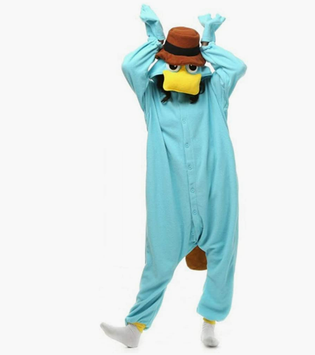
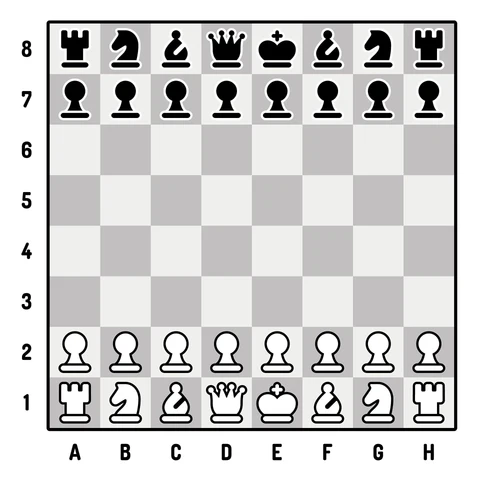

Mes Projets
Projet 1 : Application d'enchère de Vickrey
J'ai réalisé une application d'enchère de Vickrey en Java. Ce projet nous à été commandé par des professeurs de l'IUT dans le cadre de nos études. Le sujet était de réaliser une application permettant d'implémenter le système d'enchère de Vickrey en java, de manière sécurisé. L'application fonctionnait en réseau, avec les socket Java. Il nous a aussi été demandé de sécuriser l'application contre les différents types d'attaques qui pourraient la toucher (DDOS, injection SQL, intrusion sur les serveurs). Lors de ce projet, j'ai vraiment pu apprendre beaucoup de choses car c'est lors de ce projet que j'ai découvert les méthodes AGILES et plus particulièrement SCRUM J'avais beaucoup de mal en réseau et en sécurité et j'ai pu me servir de ce projet afin de mieux comprendre ces concept et d'améliorer mes compétences
Projet 2 : Code Game Jam 2024
J'ai participé à la Code Game Jam 2024 avec mon équipe. Le sujet était "Légendes éthérées", et nous avions 36 heures afin de réaliser un jeu sur ce sujet.
La difficulté ?
Je n'avais jamais codé de jeux avant. C'était une découverte totale pour moi, et j'ai du apprendre énormément en très peu de temps.
Moi et mon équipe avons pourtant réussi à réaliser un jeu presque complet, et à le rendre à temps (ce qui paraissait impossible au début)
J'ai découvert Unity pendant ces 36h, et j'ai réussi à faire un menu principal et des paramètres de son, et ces connaissances resterons ancrées en moi toute ma vie. J'ai passé un moment extraordinaire, et j'ai vraiment pu mettre mes capacitées d'apprentissage à l'epreuve ce soir là.
Et nous avons gagnés !
Vous pouvez retrouver le lien de notre jeu sur itch.ioProjet 3 : Application de gestion de poursuite d'études
J'ai réalisé une application à la demande de mon IUT afin d'aider à la gestion des poursuites d'études. En équipe de 5, et en utilisant les méthodes agiles et SCRUM, nous avons comme mission de réaliser un site web en html/css et php afin d'aider les professeurs dans les réunions de fin d'année. Il devait etre possible d'importer des fichier excel et libre office calc, de générer des pdf a partir de données remplies sur un formulaire, ou encore d'acceder à la liste des écoles qui étaient inscrite sur le site internet. J'ai réalisé la partie "étudiant" de ce site avec la gestion des graphiques et l'ordre dans les notes.


Projet 4 : Jeu d'echec
J'ai réalisé un jeu d'echec en java en projet personnel. C'était un projet compliqué parce que je n'avais aucune expérience sur les interfaces graphiques en java, et j'ai du apprendre beaucoup de choses afin de réaliser ce petit projet.
